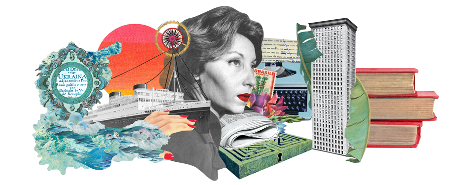

An enigmatic life

Clarice Lispector, born on December 10, 1920, in the Ukrainian town of
Chechelnyk, embarked upon a life that would captivate the literary
world with its profound depth and mystique. Her journey unfolded
amidst the tumultuous backdrop of the 20th century, marked by
political upheaval and the struggle for identity. As a Brazilian
writer of Jewish-Ukrainian descent, her life was a tapestry woven with
threads of creativity, introspection, and enigma.
Lispector's early years were marked by turbulence as her family fled
the violent pogroms of Ukraine, seeking refuge in Brazil. This journey
across continents laid the foundation for her complex relationship
with identity and language, themes that would permeate her literary
works. Her formal education in law and her marriage to a diplomat
brought her into the cosmopolitan circles of Rio de Janeiro, where she
encountered the rich tapestry of Brazilian culture. This eclectic mix
of experiences would become the palette from which she painted her
literary masterpieces.
As a writer, Clarice Lispector was a pioneer of the introspective
novel, delving deep into the labyrinthine corridors of human
consciousness. Her prose, characterized by its poetic beauty and
enigmatic allure, challenges the conventional boundaries of
storytelling. Works such as "The Hour of the Star" and "The Passion
According to G.H." invite readers to explore the innermost recesses of
the human psyche, navigating through the existential questions that
haunt us all.
Clarice Lispector's life, much like her literature, was shrouded in
mystery. Her intense, almost otherworldly gaze in photographs and her
cryptic interviews only added to her enigmatic aura. Despite the
elusive nature of her existence, she left an indelible mark on
literature, becoming a beacon for those who seek to traverse the
depths of human consciousness through the written word. Her legacy
continues to inspire and mystify, reminding us that true brilliance
often resides in the most profound and enigmatic corners of the human
soul.
| Lifetime events | ||
| Date of birth | December 10, 1920 | |
| Birthplace | Chechelnik, Ukraine | |
| Arrives in Maceió, Brazil | March, 1922 | |
| Starts to write | 1930 | |
| Finishes secondary school | 1936 | |
| Starts higher education in Law | 1939 | |
| Publishes her first short story called “Triumph” | 1940 | |
| Graduates from Law School | 1943 | |
| Publishes her first book called "Near to the Wild Heart" | 1943 | |
| Gets married with Maury Gurgel Valente | 1943 | |
| Gives birth to her first son | 1948 | |
| Gives birth to her second son | 1952 | |
| Gets divorced from Maury Gurgel Valente | 1959 | |
| Dies | December 9, 1977 | |

Copyright© Andressa Fontana